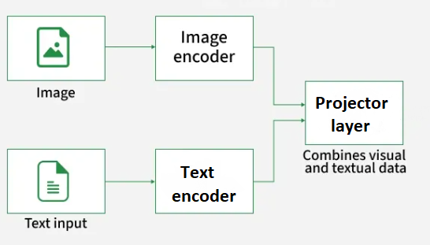
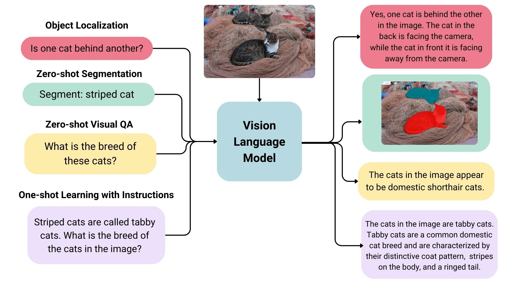
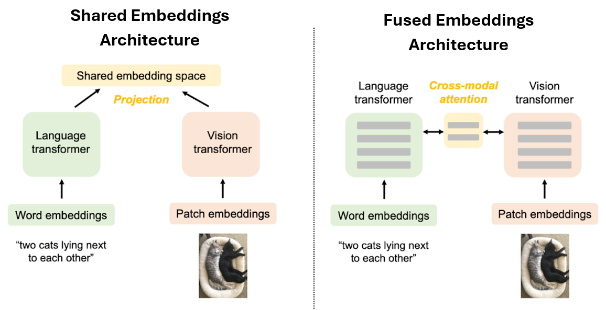
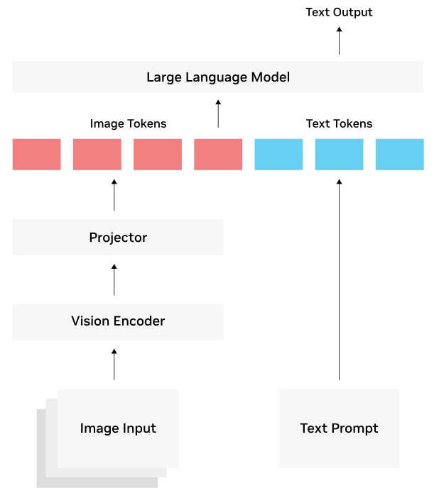
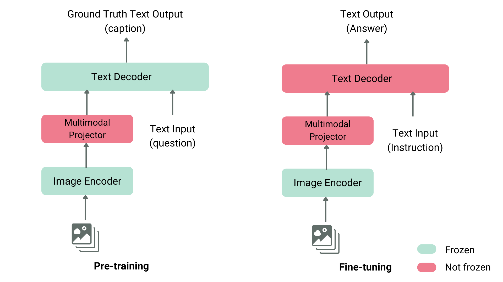
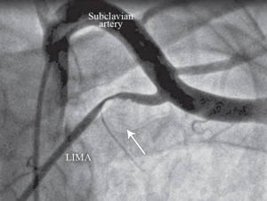
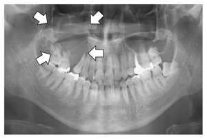
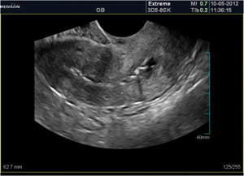

# Note that this line requires to Restart the kernel (Runtime > Restart Session) and run it one more time
!pip install -Uqq transformers accelerate peft datasets qwen-vl-utils bitsandbytes pillow trlLecture 22 - Multi-modal Models


- 22.1 Introduction to Vision-Language Models
- 22.2 VLM Architectures
- 22.3 Benchmarking VLMs
- 22.4 VLMs Importance
- 22.5 VLM Finetuning
- Appendix: VLM Finetuning with Unsloth Library
- References
This lecture introduces multimodal models, which process and integrate information from more than one data modality, such as text, images, audio, and video. We will focus on Vision-Language Models (VLMs), which are currently the most widely used class of multimodal models. We will cover VLM architectures, benchmarking, and importance, followed by an example of finetuning a VLM on a custom dataset of medical images.
22.1 Introduction to Vision-Language Models
Vision Language Models (VLMs) are multimodal systems that jointly process and reason over visual (images, videos) and linguistic (text) information. By integrating the two modalities, VLMs can understand and communicate about visual content using natural language.
VLMs take both an image and its textual description as input and generate text as output. In addition, VLM variants have also been developed that can output images. In this lecture, we will focus on VLMs that output text, as the most common type.

Figure: VLM structure. Source: [1].
Building datasets for VLMs requires collecting a large number of images and corresponding text, typically in the form of image captions or descriptive phrases. Several very large such datasets exist that have been essential for training modern VLMs and contain millions or billions of image-text pairs, with descriptions in English and other languages. For instance, the LAION-5B dataset has 5.8 billion image-text examples, and the PMD (Public Model Dataset) contains 70 million image-text examples.
During training, a VLM learns to map visual and textual representations into a joint embedding space. This mapping allows the model to associate visual features (shapes, colors, spatial relations) with linguistic concepts, enabling it to generalize to a wide range of vision tasks and perform zero-shot inference on unseen examples.
The example below illustrates a VLM performing tasks such as object localization, segmentation, visual question answering, and image learning with instructions. The user prompts are shown on the left, and the model responses are given on the right. As demonstrated in this example, VLM models can not only interpret the semantic content of images, but can also understand spatial relations in images, such as identifying relative positions of objects, or generating segmentation masks. VLMs can also output bounding boxes of objects, and perform other spatial tasks.

Figure: VLM prompts and responses. Source: [2].
In general, VLMs can perform various multimodal tasks including:
- Image and video captioning/summarization: generate context-aware descriptions of images or video frames.
- Visual question answering (VQA): answer open-ended questions based on visual content.
- Image-based reasoning: provide explanations or logical reasoning about visual scenes.
- Multimodal dialogues: engage in conversations involving visual inputs.
- Text-to-image search: retrieve images, figures, or diagrams in documents that match a textual query.
- Image generation: generate new images based on textual prompts.
22.2 VLM Architectures
Numerous architectures of VLMs have been proposed in recent years that employ different strategies to integrate visual and textual information. Two broad categories include VLM architectures with shared multimodal embeddings and with fused multimodal embeddings, illustrated in the figure.

Figure: VLM architectures. Source: [3].
VLMs with Fused Multimodal Embeddings
Other VLM architectures fuse together image and text representations into joint multimodal embeddings to enable more advanced visual reasoning. These models typically employ a text decoder network from pretrained LLM, which generates a text output.
The following figure illustrates the workflow of this class of VLMs. The visual embeddings from the vision encoder are first matched by the multimodal projector to the corresponding text embeddings of the LLM. The LLM decoder receives a combined representation consisting of visual embeddings (image tokens) from the projector and text embeddings (text tokens) from the user’s prompt or question. The LLM decoder serves as the text generation backbone, and using the combined image and text tokens, it generates a textual output in an autoregressive manner, one token at a time. Each new token is conditioned on previously generated tokens and on the fused multimodal embeddings.

Figure: Fused multimodal embeddings. Source: [4].
Training VLMs with fused vision and text embeddings typically involves multiple stages, as shown in the next figure. In the first stage only the multimodal projector (also referred to as fusion layer or adapter) is trained while keeping the image encoder and the LLM text decoder frozen. This is followed by a second stage that involves additional finetuning of the multimodal projector and parts of the text decoder, while keeping the image encoder frozen.

Figure: VLM training. Source: [4].
In addition, in some VLM architectures, the vision encoder is also finetuned in the second stage to further improve cross-modal reasoning.
Representative models of this VLM architectures are BLIP and Flamingo, which introduced cross-attention mechanism to fuse image and text embeddings (this is similar to the cross-attention module connecting the encoder and decoder in standard Transformer networks). Cross-modal attention enables direct fusion of image and text embeddings into a single multimodal representation, allowing the models to reason more efficiently over both modalities.
LLaVA (Large Language and Vision Assistant) architecture introduced a different design which replaced the cross-attention module with an MLP (Multi-Layer Perceptron) adapter for fusing multimodal embeddings. Specifically, the MLP adapter is a small fully connected network that linearly projects vision and text tokens and then concatenates them into a fused representation that is passed to the text decoder.
These VLMs laid the foundations for the modern multimodal foundation models, such as Gemini 2.5 (Google), GPT-5 (OpenAI), Claude Opus 4 (Anthropic), Qwen-VL (Alibaba), and Mistral 3.1 (Mistral AI). The modern multimodal models typically employ MLP adapters for fusing image and text representations within a unified embedding space, and provide enhanced visual comprehension, reasoning, and dialog capabilities.
Also, many open-source VLM alternatives have made this fused-architecture functionality widely accessible to the research community, and include LLaVA (Microsoft), Qwen-VL (Alibaba), LLaMA 3.2 Vision (Meta AI), InternVL (OpenGVLab), Pixtral (Mistral AI), and others.
22.3 Benchmarking VLMs
Performance of VLMs is assessed using multimodal benchmarks that evaluate models on a variety of tasks, such as reasoning, visual question answering, document comprehension, video understanding, and other tasks. Most benchmarks consist of a set of images with associated questions, often posed as multiple-choice questions. Popular benchmarks are MMMU, Video-MME, MathVista, and ChartQA. MMMU is the most comprehensive benchmark, and contains 11.5K multimodal challenges that require knowledge and reasoning across different disciplines such as arts and engineering.
Several VLM-specific leaderboards provide comparative rankings across diverse metrics. Vision Arena ranks models based on anonymous voting of model outputs by human preferences. Open VLM Leaderboard provides comparative ranking of VLMs according to different metrics and average scores.
22.4 VLMs Importance
Traditional computer vision (CV) models are constrained to learning from a predefined and fixed set of categories or objects for image classification or object detection (e.g., identify whether an image contains a cat or a dog). Moreover, these tasks require users to manually label a large number of images with a specific category for classification, or assign bounding boxes to multiple objects in each image for object detection, which is a tedious, time-consuming, and expensive process.
Conversely, VLMs are trained with more detailed textual descriptions of images, where for example an image can contain cats, dogs, and other objects, as well as the text description can provide additional contextual information (e.g., the cat is sitting, the dog is running, etc.). Learning from rich natural language descriptions allows VLMs to better understand visual scenes without limiting the learning to a narrow set of visual concepts comprising a fixed number of classes and objects. Also, it eliminates the need for exhaustive manual image labeling and extends VLMs’ utility beyond traditional CV tasks like classification or detection to new capabilities including reasoning, summarization, question answering, and interactive dialogue, by simply changing the text prompt.
VLMs have been applied across many domains and industries, and offer great potential to enhance visual perception. For instance, they can be used to review videos and extract insights for industrial inspection and robotics (detect faults, monitor operations, identify anomalies in real time), safety and infrastructure monitoring (recognize floods, fires, or traffic hazards), retail and logistics (track empty shelves, detect misplaced items, identify supply-chain bottlenecks), and numerous other tasks.
22.5 VLM Finetuning
This section presents an example of finetuning a VLM on custom dataset containing medical images, icluding X-rays, CT scans and ultrasounds showcasing medical conditions and diseases. Each image has a caption written by experts describing it. The dataset was created by the Unsloth team, and it is a sampled smaller version of the ROCO radiography dataset.
The goal is to finetune a general VLM which does not have in-depth knowledge for analysis of medical images, and to make the VLM a useful analysis tool for medical professionals.
By relying on performance-efficient finetuning techniques inlcuding quantization and LoRA, we will finetune the VLM using a single T4 GPU.
Install Dependencies
Let’s first install the libraries for VLM finetuning and import the required libraries and modulds.
import torch
from transformers import (Qwen3VLForConditionalGeneration, AutoProcessor, BitsAndBytesConfig)
from peft import LoraConfig, get_peft_model, prepare_model_for_kbit_training
from trl import SFTConfig, SFTTrainer
from datasets import load_dataset
from qwen_vl_utils import process_vision_info
import random
import warnings
warnings.filterwarnings('ignore')
# PyTorch version
print(f"PyTorch version: {torch.__version__}")PyTorch version: 2.8.0+cu126Load VLM Model
Next, we will load the VLM Qwen3-VL-4B-Instruct. The first cell defines the BitsAndBytes Configuration for loading the model parameters using 4-bit quantization, and afterward the model and tokenizer for Qwen3-VL are loaded. The parameters for BitsAndBytesConfiguration are explained in Lecture 20.
# Define bnb_config for loading quantized parameters
bnb_config = BitsAndBytesConfig(
load_in_4bit=True,
bnb_4bit_quant_type="nf4",
bnb_4bit_compute_dtype=torch.bfloat16,
bnb_4bit_use_double_quant=True,
)model_name = "Qwen/Qwen3-VL-4B-Instruct"
# Load model
model = Qwen3VLForConditionalGeneration.from_pretrained(model_name, quantization_config=bnb_config, device_map="auto", dtype=torch.bfloat16)
# Load tokenizer
processor = AutoProcessor.from_pretrained(model_name, min_pixels=256*28*28, max_pixels=512*28*28)Prepare Model for Finetuning
We will use LoRA to finetune the model. The parameters for LoRA Configuration are explained in Lecture 20. As seen from the output below, LoRA finetunes about 0.7% of the 4B parameters.
# Prepare model for quantized training
model = prepare_model_for_kbit_training(model, use_gradient_checkpointing=True)
# Define LoRA configuration
lora_config = LoraConfig(
r=16,
lora_alpha=16,
target_modules=["q_proj", "k_proj", "v_proj", "o_proj", "gate_proj", "up_proj", "down_proj"],
lora_dropout=0.05,
bias="none",
task_type="CAUSAL_LM",
)# Apply LoRA to the model
model = get_peft_model(model, lora_config)
# Print the number trainable parameters
model.print_trainable_parameters()trainable params: 33,030,144 || all params: 4,470,845,952 || trainable%: 0.7388Load and Format the Dataset
The radiology dataset is loaded next. It consits of 1,978 samples containing images and text. The code in the following cells reformat the dataset for processing with Qwen3-VL, and splits it into training and evaluation subsets. Formating prompts for VLM is slightly more difficult then LLMs, because user’s prompts should contain both text and corresponding images.
# Load the dataset
dataset = load_dataset("unsloth/Radiology_mini", split="train")# Print the number of samples
print(f"Number of samples: {len(dataset)}")
# Print the column names
print(f"Dataset columns: {dataset.column_names}")Number of samples: 1978
Dataset columns: ['image', 'image_id', 'caption', 'cui']# Format the radiology dataset to chat format
def format_radiology_sample(sample):
messages = ["Describe this medical image in detail.",
"What are the key findings in this radiology image?",
"Analyze this medical scan and provide your observations.",
"What abnormalities or notable features do you see?"]
instruction = random.choice(messages)
return {"text": f"<|im_start|>user\n<|vision_start|><|image_pad|><|vision_end|>{messages}<|im_end|>\n<|im_start|>assistant\n{sample['caption']}<|im_end|>",
"image": sample["image"]}# Apply formatting to the Dataset
formatted_dataset = dataset.map(
format_radiology_sample,
remove_columns=[col for col in dataset.column_names if col != 'image'],
desc="Formatting dataset",
num_proc=4,
)# Split into train and evalation datasets
train_dataset = formatted_dataset.select(range(len(formatted_dataset) - 100))
eval_dataset = formatted_dataset.select(range(len(formatted_dataset) - 100, len(formatted_dataset)))print(f"Training samples: {len(train_dataset)}")
print(f"Validation samples: {len(eval_dataset)}")
print(f"Columns: {train_dataset.column_names}")Training samples: 1878
Validation samples: 100
Columns: ['image', 'text']Data Collator
The next cell defines a data collator for Qwen3 that combines images and text into batches for processing by the VLM.
# Collate text and images into batches for Qwen3VLM
# The code in this cell is not required in preparation for quizzes
class Qwen3VLDataCollator:
def __init__(self, processor):
self.processor = processor
self.image_token_id = processor.tokenizer.convert_tokens_to_ids("<|image_pad|>")
self.im_start_id = processor.tokenizer.convert_tokens_to_ids("<|im_start|>")
self.im_end_id = processor.tokenizer.convert_tokens_to_ids("<|im_end|>")
def __call__(self, features):
# Extract text and images
batch_texts = [f["text"] for f in features]
batch_images = [f["image"] for f in features]
# Process
batch = self.processor(text=batch_texts, images=batch_images, padding=True, truncation=False, return_tensors="pt")
# Create labels
labels = batch["input_ids"].clone()
labels[labels == self.processor.tokenizer.pad_token_id] = -100
# Mask image tokens and instruction
for idx, text in enumerate(batch_texts):
input_ids = batch["input_ids"][idx]
# Mask image pad tokens
image_token_mask = (input_ids == self.image_token_id)
labels[idx][image_token_mask] = -100
# Find assistant response
assistant_marker = "<|im_start|>assistant\n"
assistant_pos = text.find(assistant_marker)
if assistant_pos != -1:
prompt_text = text[:assistant_pos + len(assistant_marker)]
prompt_ids = self.processor.tokenizer.encode(prompt_text, add_special_tokens=False)
prompt_length = min(len(prompt_ids), len(labels[idx]))
labels[idx, :prompt_length] = -100
# Mask final <|im_end|>
try:
im_end_positions = (input_ids == self.im_end_id).nonzero(as_tuple=True)[0]
if len(im_end_positions) > 0:
labels[idx, im_end_positions[-1].item()] = -100
except:
pass
batch["labels"] = labels
return batch# Apply the collator class
data_collator = Qwen3VLDataCollator(processor)Test the Qwen VLM Response Before Finetuning
Let’s check the responses by Qwen3 VLM to three samples images before finetuning the model. Notice that the generated responses by the model are quite accurate, and the model can understand the images fairly well. However, the descriptions are more general and explain what the images show, while the ground truth captions prepared by clinicians use concrete medical terms to describe the images.
# The code in this cell is not required in preparation for quizzes
instruction = "Describe this medical image in detail."
# Test with 3 samples
test_indices = [0, 5, 10]
for idx in test_indices:
print(f"TEST EXAMPLE {idx}")
test_image = dataset[idx]["image"]
ground_truth = dataset[idx]["caption"]
# Show image
display_image = test_image.copy()
display_image.thumbnail((300, 300))
display(display_image)
# Format input
messages = [{"role": "user", "content": [{"type": "image", "image": test_image}, {"type": "text", "text": instruction}]}]
# Apply chat template
text = processor.apply_chat_template(messages, tokenize=False, add_generation_prompt=True)
# Process inputs
inputs = processor(text=[text], images=[test_image], padding=True, return_tensors="pt").to(model.device)
print("Generated Caption: ")
with torch.inference_mode():
output = model.generate(**inputs, max_new_tokens=128, temperature=0.7, top_p=0.9,
repetition_penalty=1.2, do_sample=True, use_cache=True,
pad_token_id=processor.tokenizer.pad_token_id,
eos_token_id=processor.tokenizer.eos_token_id)
generated_text = processor.decode(output[0], skip_special_tokens=True)
# Extract assistant's response
if "assistant" in generated_text:
parts = generated_text.split("assistant")
response = parts[-1].strip() if len(parts) > 1 else generated_text
else:
response = generated_text
print(response)
print("\nGround Truth:")
print(ground_truth)TEST EXAMPLE 0
Generated Caption:
This is a panoramic radiograph (also known as an “odontogram” or “panoramic X-ray”), which provides a broad view of the entire mouth, including all teeth, jaws, and surrounding structures.
**Overall Appearance:**
- The image displays both the maxillary (upper) and mandibular (lower) dental arches.
- It shows clear differentiation between tooth roots, crowns, bone density, and adjacent soft tissues.
- Several white arrows are superimposed on the image to highlight specific areas of interest—likely pathological findings such as cysts, tumors, or lesions within the jawbone.
---
**Detailed
Ground Truth:
Panoramic radiography shows an osteolytic lesion in the right posterior maxilla with resorption of the floor of the maxillary sinus (arrows).
TEST EXAMPLE 5
Generated Caption:
This is a grayscale angiographic image, likely from a cardiac catheterization procedure, showing the proximal portion of the thoracic vasculature.
Key anatomical structures and labels:
- **Subclavian Artery**: A large vessel running horizontally across the upper part of the frame, labeled clearly at the top center.
- **LIMA (Left Internal Mammary Artery)**: An artery branching off to the lower left side, identified by its label “LIMA” near the bottom-left corner. It appears as a distinct, relatively straight vascular structure with contrast-filled lumen.
Anatomical relationships:
- The LIMA
Ground Truth:
Anteroposterior coronary angiographic view of the subclavian artery and left internal mammary artery (LIMA), showing the proximal LIMA compression and severe flow interruption associated with the hyperabduction of left arm (The arrow indicates the area of the compression and the flow interruption.)
TEST EXAMPLE 10
Generated Caption:
This is a grayscale ultrasound (OB — Obstetrics) image, captured on a Medison ultrasound machine using the “Extreme” probe model 3D5-8EK, dated October 5, 2012 at 11:36 AM.
**Image Content & Structure:**
The scan shows an internal pelvic structure consistent with a pregnant uterus, likely viewed transvaginally or abdominally for obstetric assessment.
– The central region contains a heterogeneous area of tissue and fluid-filled structures that are characteristic of fetal development within the gestational sac/uterine cavity.
– A distinct, somewhat oval-shaped dark space (
Ground Truth:
Ultrasound shows irregular endometrial contour with typical adhesion appearnace.VLM Finetuning
Similar to Lecture 20, we will use Supervised Fine-Tuning (SFT) to refine the model parameters on the radiology dataset. The training arguments are explained in the first lecture on LLMs.
# Training configuration
training_args = SFTConfig(
output_dir="./qwen3-vlm-4b-radiology",
# training steps
max_steps=20,
# Batch settings
per_device_train_batch_size=2,
gradient_accumulation_steps=16,
gradient_checkpointing=True,
# Learning rate
learning_rate=2e-4,
lr_scheduler_type="cosine",
warmup_ratio=0.1,
# Optimizer
optim="adamw_torch_fused",
weight_decay=0.01,
max_grad_norm=0.3,
# Precision
bf16=True,
# Logging
logging_steps=2,
report_to="none",
# Dataset processing
remove_unused_columns=False,
dataset_text_field="",
dataset_kwargs={"skip_prepare_dataset": True})# Initialize trainer
trainer = SFTTrainer(
model=model,
args=training_args,
train_dataset=train_dataset,
data_collator=data_collator,
processing_class=processor,
peft_config=lora_config,
)Finetuning the model took close to 3 hours, where 20 steps used 2x16 samples, i.e., in total 640 samples were used, out of 1,800 available samples in the train dataset. One can conclude that VLM finetuning is more computationally intense than LLM finetuning. In this case, finetuning the model for 1 full epoch would have taken about 9 hours.
# Training
trainer.train()The tokenizer has new PAD/BOS/EOS tokens that differ from the model config and generation config. The model config and generation config were aligned accordingly, being updated with the tokenizer's values. Updated tokens: {'eos_token_id': 151645, 'bos_token_id': None, 'pad_token_id': 151643}.
[20/20 2:56:37, Epoch 0/1]
| Step | Training Loss |
|---|---|
| 2 | 3.943400 |
| 4 | 3.224800 |
| 6 | 2.151000 |
| 8 | 1.638800 |
| 10 | 1.184200 |
| 12 | 1.174600 |
| 14 | 0.973300 |
| 16 | 0.957700 |
| 18 | 1.021700 |
| 20 | 0.913200 |
TrainOutput(global_step=20, training_loss=1.71826012134552, metrics={'train_runtime': 11160.0658, 'train_samples_per_second': 0.057, 'train_steps_per_second': 0.002, 'total_flos': 6966597909897216.0, 'train_loss': 1.71826012134552, 'epoch': 0.3407880724174654})# Save the finetuned model
output_dir = "./qwen3-vlm-4b-radiology-final"
trainer.model.save_pretrained(output_dir)
processor.save_pretrained(output_dir)[]Perform Inference with the Finetuned Model
Now that the VLM has been finetuned, let’s test the model using the same examples from above, and check the generated responses.
# Clear the training model from memory
del model
del trainer
torch.cuda.empty_cache()from peft import PeftModel
# Reload base model with bnb quantization
base_model = Qwen3VLForConditionalGeneration.from_pretrained("Qwen/Qwen3-VL-4B-Instruct",
quantization_config=bnb_config,
device_map="auto",
torch_dtype=torch.bfloat16)
# Load the trained adapters
inference_model = PeftModel.from_pretrained(base_model, "./qwen3-vlm-4b-radiology-final/")
# Load tokenizer
processor = AutoProcessor.from_pretrained("./qwen3-vlm-4b-radiology-final/", min_pixels=256*28*28, max_pixels=512*28*28)
# Perform inference
inference_model.eval()# The code in this cell is not required in preparation for quizzes
instruction = "Describe this medical image in detail."
# Test with teh same 3 samples
test_indices = [0, 5, 10]
for idx in test_indices:
print(f"TEST EXAMPLE {idx}")
test_image = dataset[idx]["image"]
ground_truth = dataset[idx]["caption"]
# Show image
display_image = test_image.copy()
display_image.thumbnail((300, 300))
display(display_image)
# Format input
messages = [{"role": "user", "content": [{"type": "image", "image": test_image}, {"type": "text", "text": instruction}]}]
# Apply chat template
text = processor.apply_chat_template(messages, tokenize=False, add_generation_prompt=True)
# Process inputs
inputs = processor(text=[text], images=[test_image], padding=True, return_tensors="pt").to(inference_model.device)
print("Generated Caption: ")
with torch.inference_mode():
output = inference_model.generate(**inputs, max_new_tokens=128, temperature=0.7, top_p=0.9,
repetition_penalty=1.2, do_sample=True, use_cache=True,
pad_token_id=processor.tokenizer.pad_token_id,
eos_token_id=processor.tokenizer.eos_token_id)
generated_text = processor.decode(output[0], skip_special_tokens=True)
# Extract assistant's response
if "assistant" in generated_text:
parts = generated_text.split("assistant")
response = parts[-1].strip() if len(parts) > 1 else generated_text
else:
response = generated_text
print(response)
print("\nGround Truth:")
print(ground_truth)TEST EXAMPLE 0
Generated Caption:
Radiographic view of the mandible and maxilla showing four radiolucent cysts (white arrows) near teeth 34, 25, 16 and 78 respectively; note: a tooth with root resorption at position number 39 is also visible on right side. The presence of these lesions may suggest possible pathology or developmental anomaly requiring further clinical evaluation.
[Note]: This case represents an incidental finding rather than pathological lesion which needs to be evaluated clinically for differential diagnosis such as radicular cyst / odontoma etc..] [Image provided by Dr.S.Krishnan].
- Image Description:
-
Ground Truth:
Panoramic radiography shows an osteolytic lesion in the right posterior maxilla with resorption of the floor of the maxillary sinus (arrows).
TEST EXAMPLE 5
Generated Caption:
Radiology Image Description: A 64-year-old male with a history of prior myocardial infarction and chronic renal failure underwent coronary angiography for evaluation of his right ventricular outflow tract (RVOT) obstruction due to hypertrophic cardiomyopathy, which was suspected on cardiac magnetic resonance imaging but not confirmed by echocardiogram or CT scan.
This radiological study depicts the left internal mammary artery as it runs along its course from beneath the subclavian vessel toward the heart's apex; there is no sign that any portion has been blocked off.
The patient had undergone two previous bypass grafts during an initial surgery
Ground Truth:
Anteroposterior coronary angiographic view of the subclavian artery and left internal mammary artery (LIMA), showing the proximal LIMA compression and severe flow interruption associated with the hyperabduction of left arm (The arrow indicates the area of the compression and the flow interruption.)
TEST EXAMPLE 10
Generated Caption:
Transvaginal ultrasound showing a 34 mm complex cystic mass with an associated echogenic structure on the left adnexa, which is suggestive of uterine fibroid or ovarian tumor (Figure). The lesion measures approximately 62 x 58 mm and contains numerous fluid-filled sacs separated by septae that extend into the pelvic cavity.
Radiology report details:
- Pelvic scan: transabdomen.
- Date scanned: October 07, 2012.
- Patient ID number: 965/25.
- Scan duration: 2 minutes.
- Operator name:
Ground Truth:
Ultrasound shows irregular endometrial contour with typical adhesion appearnace.Note that the generated responses by the finetuned VLM contain more clinical terms in comparison to the responses by the VLM before the finetuning phases that were more basic. While the accuracy of the responses can be evaluated by clinicians, it seems, at least, from an LLM perspective, that the model has acquired knowledge about the images from the finetuning samples.
Appendix: VLM Finetuning with Unsloth Library
(The material in the Appendix is not required for quizzes and assignments.)
This section presents another example of finetuning the Qwen3 VLM with the Unsloth library [8]. The code with Unsloth is simpler, and it is optimized for minimizing the memory use and computational resources.
# Install Unsloth
%%capture
import os, re
if "COLAB_" not in "".join(os.environ.keys()):
!pip install unsloth
else:
# Do this only in Colab notebooks! Otherwise use pip install unsloth
import torch; v = re.match(r"[0-9\.]{3,}", str(torch.__version__)).group(0)
xformers = "xformers==" + ("0.0.32.post2" if v == "2.8.0" else "0.0.29.post3")
!pip install --no-deps bitsandbytes accelerate {xformers} peft trl triton cut_cross_entropy unsloth_zoo
!pip install sentencepiece protobuf "datasets>=3.4.1,<4.0.0" "huggingface_hub>=0.34.0" hf_transfer
!pip install --no-deps unsloth
!pip install transformers==4.57.0
!pip install --no-deps trl==0.22.2from unsloth import FastVisionModel
import torch
model, tokenizer = FastVisionModel.from_pretrained(
"unsloth/Qwen3-VL-8B-Instruct-unsloth-bnb-4bit",
load_in_4bit = True, # Use 4bit to reduce memory use. False for 16bit LoRA.
use_gradient_checkpointing = "unsloth", # True or "unsloth" for long context
)🦥 Unsloth: Will patch your computer to enable 2x faster free finetuning.
🦥 Unsloth Zoo will now patch everything to make training faster!
==((====))== Unsloth 2025.11.3: Fast Qwen3_Vl patching. Transformers: 4.57.0.
\\ /| Tesla T4. Num GPUs = 1. Max memory: 14.741 GB. Platform: Linux.
O^O/ \_/ \ Torch: 2.8.0+cu126. CUDA: 7.5. CUDA Toolkit: 12.6. Triton: 3.4.0
\ / Bfloat16 = FALSE. FA [Xformers = 0.0.32.post2. FA2 = False]
"-____-" Free license: http://github.com/unslothai/unsloth
Unsloth: Fast downloading is enabled - ignore downloading bars which are red colored!Add LoRA adapters for parameter efficient finetuning allowing to train a small portion of all parameters. Unsloth also supports finetuning only the vision part of the model, only the language part, or both the vision and language parts.
# Prepare the model for LoRA finetuning
model = FastVisionModel.get_peft_model(
model,
finetune_vision_layers = True, # False if not finetuning vision layers
finetune_language_layers = True, # False if not finetuning language layers
finetune_attention_modules = True, # False if not finetuning attention layers
finetune_mlp_modules = True, # False if not finetuning MLP layers
r = 16, # The larger, the higher the accuracy, but might overfit
lora_alpha = 16, # Recommended alpha == r at least
lora_dropout = 0,
bias = "none",
random_state = 3407,
use_rslora = False, # We support rank stabilized LoRA
loftq_config = None, # And LoftQ
# target_modules = "all-linear", # Optional now! Can specify a list if needed
)# Load the radiology dataset
from datasets import load_dataset
dataset = load_dataset("unsloth/Radiology_mini", split = "train")Format the dataset for finetuning.
instruction = "You are an expert radiographer. Describe accurately what you see in this image."
def convert_to_conversation(sample):
conversation = [
{ "role": "user",
"content" : [
{"type" : "text", "text" : instruction},
{"type" : "image", "image" : sample["image"]} ]
},
{ "role" : "assistant",
"content" : [
{"type" : "text", "text" : sample["caption"]} ]
},
]
return { "messages" : conversation }
passconverted_dataset = [convert_to_conversation(sample) for sample in dataset]# Check the formatted dataset
converted_dataset[0]{'messages': [{'role': 'user',
'content': [{'type': 'text',
'text': 'You are an expert radiographer. Describe accurately what you see in this image.'},
{'type': 'image',
'image': <PIL.PngImagePlugin.PngImageFile image mode=L size=657x442>}]},
{'role': 'assistant',
'content': [{'type': 'text',
'text': 'Panoramic radiography shows an osteolytic lesion in the right posterior maxilla with resorption of the floor of the maxillary sinus (arrows).'}]}]}Next, the model is trained for 60 steps. You can set num_train_epochs=1 for longer finetuning.
from unsloth.trainer import UnslothVisionDataCollator
from trl import SFTTrainer, SFTConfig
FastVisionModel.for_training(model) # Enable for training!
trainer = SFTTrainer(
model = model,
tokenizer = tokenizer,
data_collator = UnslothVisionDataCollator(model, tokenizer), # Must use!
train_dataset = converted_dataset,
args = SFTConfig(
per_device_train_batch_size = 2,
gradient_accumulation_steps = 16,
warmup_steps = 3,
max_steps = 30,
# num_train_epochs = 1, # Set this instead of max_steps for full training runs
learning_rate = 2e-4,
logging_steps = 5,
optim = "adamw_8bit",
weight_decay = 0.01,
lr_scheduler_type = "linear",
seed = 3407,
output_dir = "outputs",
report_to = "none",
# You MUST put the below items for vision finetuning:
remove_unused_columns = False,
dataset_text_field = "",
dataset_kwargs = {"skip_prepare_dataset": True},
max_length = 2048,
),
)Unsloth: Model does not have a default image size - using 512# Train the model
trainer_stats = trainer.train()The model is already on multiple devices. Skipping the move to device specified in `args`.
==((====))== Unsloth - 2x faster free finetuning | Num GPUs used = 1
\\ /| Num examples = 1,978 | Num Epochs = 1 | Total steps = 30
O^O/ \_/ \ Batch size per device = 2 | Gradient accumulation steps = 16
\ / Data Parallel GPUs = 1 | Total batch size (2 x 16 x 1) = 32
"-____-" Trainable parameters = 51,346,944 of 8,818,470,640 (0.58% trained)Unsloth: Will smartly offload gradients to save VRAM!
[30/30 16:57, Epoch 0/1]
| Step | Training Loss |
|---|---|
| 5 | 3.280000 |
| 10 | 2.047400 |
| 15 | 1.527300 |
| 20 | 1.294400 |
| 25 | 1.268300 |
| 30 | 1.300300 |
Next, a response is generated with the finetuned model for the first radiology image.
FastVisionModel.for_inference(model) # Enable for inference!
image = dataset[0]["image"]
instruction = "You are an expert radiographer. Describe accurately what you see in this image."
messages = [
{"role": "user", "content": [
{"type": "image"},
{"type": "text", "text": instruction}
]}
]
input_text = tokenizer.apply_chat_template(messages, add_generation_prompt=True)
inputs = tokenizer(
image,
input_text,
add_special_tokens=False,
return_tensors="pt",
).to("cuda")
from transformers import TextStreamer
text_streamer = TextStreamer(tokenizer, skip_prompt=True)
_ = model.generate(**inputs, streamer=text_streamer, max_new_tokens=128,
use_cache=True, do_sample=True, temperature=1.5, min_p=0.1)Cephalometric X-ray showing the presence of supernumerary tooth on upper and lower incisors.<|im_end|># Show image
display_image = image.copy()
display_image.thumbnail((300, 300))
display(display_image)
References
- Vision-language models (VLMs) Explained (pt. 1), by Sean Trott, available at https://seantrott.substack.com/p/vision-language-models-vlms-explained.
- CLIP: Connecting text and images, OpenAI, available at https://openai.com/index/clip/.
- Vision Language Models (VLMs) Explained - GeeksForGeeks, available at https://www.geeksforgeeks.org/artificial-intelligence/vision-language-models-vlms-explained/.
- Vision Language Models Explained - Hugging Face Blog, by Merve, Edward Beeching, available at https://huggingface.co/blog/vlms.
- Understanding Vision-Language Models (VLMs): A Practical Guide, by Pietro Bolcato, available at https://medium.com/@pietrobolcato/understanding-vision-language-models-vlms-a-practical-guide-8da18e9f0e0c.
- What Are Vision Language Models, by NVIDIA, available at https://www.nvidia.com/en-us/glossary/vision-language-models/.
- Vision Language Models, by Rohit Bandaru, available at https://rohitbandaru.github.io/blog/Vision-Language-Models/.
- Vision Fine-tuning, by Unsloth, available at https://docs.unsloth.ai/basics/vision-fine-tuning